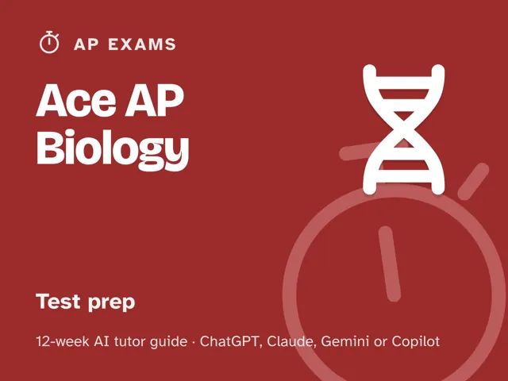
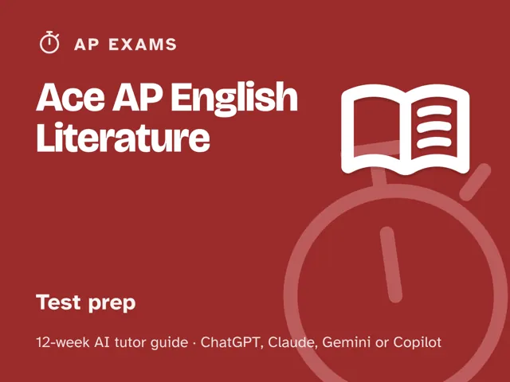

Ace AP English Literature
$29Instant download: a PDF to read, a browser copy, and the AI-tutor file you hand straight to any AI assistant.Buy it on Etsy →
Take the free placement check first: 15 minutes, and it names the week to start at.
Stop re-reading the same review packet and hoping it sticks. This 12-week plan starts with an honest diagnostic that maps your Multiple Choice, Poetry Analysis Essay, Prose Analysis Essay, and Literary Argument Essay skills into solid, shaky, and missing, then spends the middle weeks drilling exactly the gaps that map found, with an AI tutor that diagnoses before it teaches and never just hands you a finished thesis or paragraph. The last four weeks are full-length timed practice with a review of every miss and every lost rubric point, ending in a dress rehearsal and an honest score estimate. No official test content, no score guarantees, just a real plan, real rubric literacy, and a coach that keeps you honest.
What you get
- 12 weekly sessions, each built around a plain-language concept, a concrete worked example, a minute-by-minute session plan with the AI-tutor instructions built in, a "show me" checkpoint, common mistakes to watch for, and practice.
- A digital guide: one deep, ready-to-run session per week, about 60 minutes in weeks 1-8 and longer in the full-length timed weeks 9-12 (90 minutes up to nearly four hours for the dress rehearsal). You lead it; every step is scripted, timed and written out for you. No teaching background or prior AI experience needed.
- A "Never used an AI chat assistant? Start here" section in the front matter that takes a complete beginner from zero to ready in about five minutes. No paid plan required; any free modern AI chat assistant works.
- An orientation that sets the weekly rhythm and the one rule that makes this work: review every miss and every lost rubric point until you can explain the "why," not just what the correct answer or stronger essay would have been.
- Four rescue prompts in the front matter for when you're frustrated, stuck, plateaued, or the AI goes off track. Every weekly launch prompt also tells the tutor to ask before it tells and never write your thesis, evidence, or paragraphs for you, and every scoring prompt scores your work honestly against the real AP rubric, with no rounding up.
- A personal gap map you build in week 1 and revisit in week 12 to see exactly what moved, plus an evidence bank of key scenes from a full-length work, built for the memory-only literary argument essay.
The 12 weeks
- The Diagnostic: Your Real Starting Line
- Meet the AP Lit Exam and Its Rubric
- Close-Reading Poetry: Sound, Structure, and Speaker
- Close-Reading Prose Fiction: Narration and Craft
- The Literary Argument Essay: Choosing Your Own Text
- Analyzing a Work Over Time: Building Your Evidence Bank
- Multiple-Choice Strategy and Speed
- Writing a Strong Timed Essay: Thesis, Evidence, Commentary
- Timed Practice #1: Full Multiple-Choice Section
- Timed Practice #2: Poetry and Prose Analysis Essays
- Timed Practice #3: The Full Three-Essay Set
- Full Dress Rehearsal and the Plan Ahead
Who it's for
Students taking AP English Literature and Composition who want a real plan instead of a stack of random practice essays. It's self-directed (built to be run by the student) and works whether you're starting from a strong base or feel behind on poetry analysis, prose analysis, or the literary argument essay's from-memory demands.
Why this instead of a free chatbot
A raw chatbot will happily write your thesis for you, which feels productive but teaches you nothing and won't be there on test day. This pack ships what a chatbot alone lacks: an up-front diagnosis that tells you which of the four areas (multiple choice and the three essays) to fix first, a structured 12-week progression instead of random essay prompts, a dedicated week for building the evidence bank of key scenes the literary argument essay demands (no text is provided for that question), real timed practice under section and essay time limits (not untimed noodling), and a forced review of every miss and every lost rubric point for the underlying cause: content gap, weak evidence, generic commentary, or timing. A review book gives you the same practice set regardless of what you actually need; this pack adapts to your gap map.
FAQ
- Is this official College Board or AP content? No. This pack is not affiliated with, endorsed by, or connected to the College Board, the AP Program, or any other test maker, and it contains no official or leaked test content. Use it alongside official materials (AP Classroom, released free-response questions and rubrics, official practice exams) as your source of truth for real questions and the current format.
- Will this guarantee a certain score? No. No pack, book, or tutor can guarantee a score, AP credit, or an admission outcome, and this one won't claim to. What it offers is an honest diagnostic, focused practice on your actual gaps, and real timed review against the real rubric; the result depends on the work you put in.
- Which AI does it use? I've never used one. Any modern AI chat assistant works (ChatGPT, Claude, Copilot, Gemini), and the free version of any of them is enough; no paid plan needed. The guide's first section walks complete beginners through setup in about five minutes, so you're ready before week 1 starts.
- How much time does this take each week? About 60 minutes a week in weeks 1-8. Weeks 9-12 are full-length timed practice: about 90 minutes, 105 minutes, two and a half hours, and nearly four hours for the final dress rehearsal. You lead every session, and it's fully scripted: every step is timed and written out for you. No prep, no expertise needed.
- Do I need to already know my score or which essay type I'm bad at? No. Week 1 is the diagnostic. You start wherever you actually are, not where you assume you are.
- What if my essay score plateaus? The guide includes a plateau rescue prompt built for exactly this: it changes the approach and targets your specific error pattern instead of repeating the same drills.
- Refunds? Standard marketplace refund policy applies.
$29Instant download: a PDF to read, a browser copy, and the AI-tutor file you hand straight to any AI assistant.Buy it on Etsy →